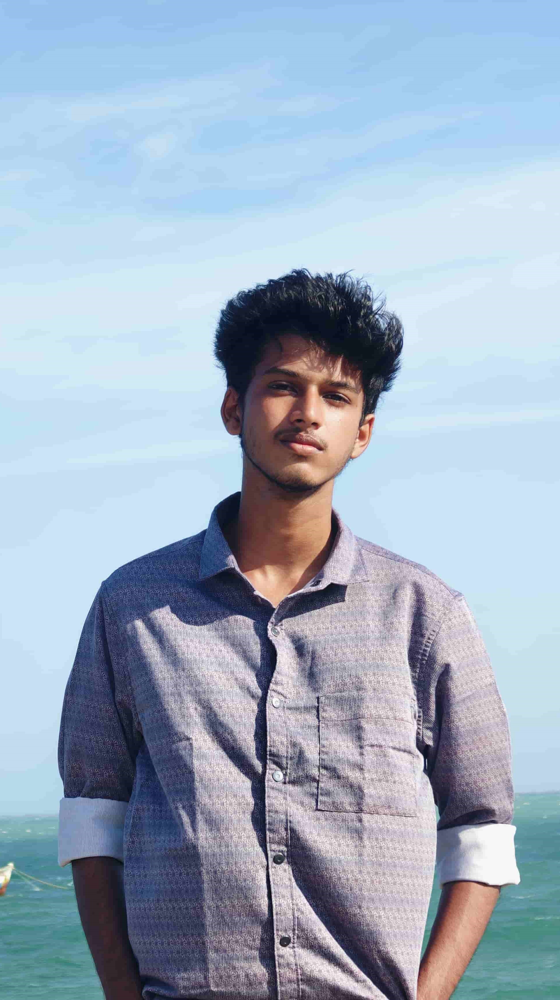

Mohamedh Faizal
Aspiring Data Analyst
Hello, this is Faizal from Madurai, an Aspiring Data Analyst. I am currently pursuing a B.Sc in CS with Data Science and Analytics at Manikam Ramaswami College of Arts and Science. I am a coding and tech enthusiast. I have completed my schooling at TVS HSS. My dream is to become a "Cricket Analyst". This portfolio is a way for you to get to know me better—who I am, what I do, and what I'm passionate about.
